Codly
Give your Typst code blocks line numbers, filenames, themes, highlights, and references. Add annotations to explain a few lines, show a source excerpt, or present a syntax-aware diff using the same code-block layout.
Get started
Import Codly and add one show rule to convert ordinary fenced code blocks:
#import "@preview/codly:2.0.0" as codly
#show raw.where(block: true): codly.new
```rs
fn greet(name: &str) {
println!("Hello, {name}!");
}
```
Only block code is converted; inline code keeps Typst’s usual formatting.
For settings on a single block, pass its source directly to
codly.new:
#import "@preview/codly:2.0.0" as codly
#codly.new(
```py
def greet(name):
print(f"Hello, {name}!")
```,
file: "greeting.py",
number-enabled: false,
)Edit & run on your device
The highlighted source and output update after you stop typing. Copy code includes your edits.

Explicit blocks do not need the automatic conversion rule.
Choose a theme and set defaults
Use scoped show rules for shared settings. codly.theme
applies a preset; component setters let you customize individual parts afterward.
#import "@preview/codly:2.0.0" as codly
#show: codly.theme("github-light")
#show: codly.set_(padding: 4pt, radius: 5pt)
#show: codly.number-set_(numbering: "1.")
#show raw.where(block: true): codly.new
```py
def square(value):
return value * value
```Edit & run on your device
The highlighted source and output update after you stop typing. Copy code includes your edits.

The six built-in presets are thesis (the default), dark, clean,
github-light, solarized-light, and one-light. Put show rules in a content
block to limit their scope, as in the
codly.new examples.
Add language names and icons
The optional codly-languages
package supplies language names, icons, and colors. Register its definitions
with codly.lang-set_:
#import "@preview/codly:2.0.0" as codly
#import "@preview/codly-languages:0.1.8": codly-languages
#show: codly.lang-set_(languages: codly-languages)
#show raw.where(block: true): codly.new
```py
print("Hello, Typst!")
```You can also supply your own dictionary for custom names or colors; see
codly.language.
Explain and reference your code
Put a block in a labelled figure to give it a caption and make its lines and
labelled highlights referenceable; Codly discovers the figure label
automatically.
#import "@preview/codly:2.0.0" as codly
#figure(caption: [Normalize a name])[
#codly.new(
```py
def normalize(name):
return name.strip()
```,
highlights: (
(line: 2, start: 12, end: 23, tag: "trim", label: <trimmed>),
),
)
]<normalizer>
The normalization happens at @trimmed, on @normalizer:2.Edit & run on your device
The highlighted source and output update after you stop typing. Copy code includes your edits.

Highlight character positions are one-based and inclusive, counting leading
indentation. Here, name.strip() occupies positions 12 through 23 on line 2.
The highlight’s line uses the displayed number; source-line ranges used for
excerpts and annotations count the original source lines.
Try the annotations and references playground, or see the listing-figure example for caption placement and a list of listings.
Find your next example
| You want to… | Start here |
|---|---|
| Experiment with a complete example | Playgrounds |
| Select an excerpt or continue numbering | codly.new and codly.info |
| Add a filename, header, or footer | file, header, and footer |
| Highlight a line or part of an expression | highlighted-line and highlight-config |
| Attach a brace, a note, or a pointed bubble | annotation-config and callout-config |
| Present a patch or mix syntax languages | Diffs and mixed languages |
| Fit long lines or add custom gutters | Layout and excerpts |
| Look up every field and its default | API reference |